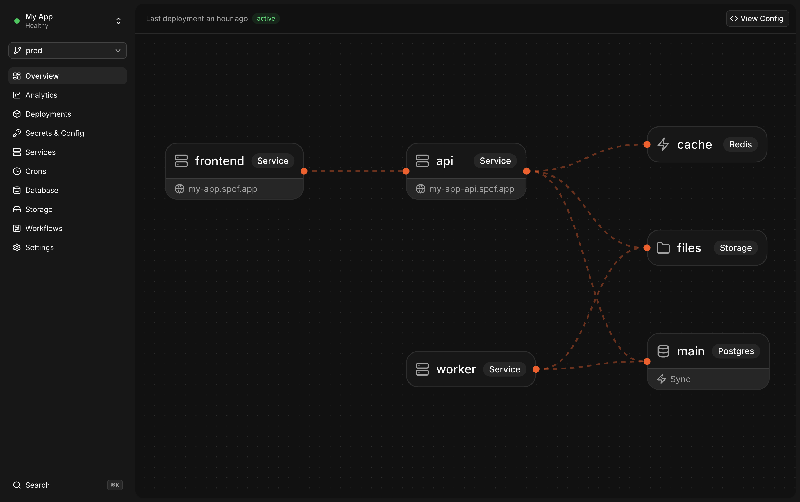

Define
Specific teaches your coding agent to define resources and connect the right dependencies, without SDKs in your app.
Learn more

specific.hcl
1 service "web" {
2 build = build.web
3 command = "npm start"
4 endpoint { public = true }Specific lets your coding agent both write code and build infrastructure to run it.
Build from scratch and deploy to production in minutes.

Specific teaches your coding agent to define resources and connect the right dependencies, without SDKs in your app.
Learn more1 service "web" {
2 build = build.web
3 command = "npm start"
4 endpoint { public = true }You and your agent can spin up the whole stack locally with one command, then test safely against production data in previews.
Learn moreauth-flow
Local
search-index
Local
PR #42
Preview
PR #47
Preview
> specific dev
web
api
postgres
storage
Your agent ships with a single command or via GitHub. Specific builds, provisions and rolls out the change safely.
Learn more> specific deploy
⠋Creating archive
Your agent can query logs and metrics from your environments to find the root cause and ship the fix.
Learn moreUse any framework or static site. We handle domains, TLS, CDN and global edge.
Hello from Specific!
APIs, background workers, cron jobs and long-running services. Autoscaling with per-usage pricing.
Postgres with bottomless storage, autoscaling, built-in schema migrations and point-in-time recovery.
Sync engine for performant real-time, collaborative or local-first apps with data straight from Postgres.
Store embeddings and run semantic search on top of your application data.
S3-compatible object storage that is globally replicated, durable and built for performance.
Durable orchestration powered by Temporal for long-running jobs, retries and stateful processes.
Dedicated environments like staging, or previews for every PR with copy-on-write branching of your data.
Store and manage all your secrets and configurations securely, no manual integration needed.
Specific powers tens of thousands of backends for our users' mobile apps. Integrating it with our custom coding agent was a breeze. Our users now get a seamless experience in going from idea to published app with a production-ready backend.
For deployment I've tried @specific_dev and it was pretty much as easy as it gets. Pointed Claude to the Specific onboarding docs and it did everything else.
Our team needed to ship internal tools fast and securely with their own coding agents. Specific lets us ship any idea we have in minutes, and it's all protected behind environments that enforce authentication without having to change our code.
We replaced Vercel, Supabase, and Google Cloud with Specific. The setup was much smoother than other platforms we tried, full-stack previews worked out of the box, and our agents now have the infrastructure context to do more of the work.
I'm seriously impressed by how good the local dev setup is. It's great not having to spin up a bunch of Docker containers. Specific adds the abstraction layer the modern stack has been missing, and I'm pretty sure it has already saved us dozens, maybe hundreds, of hours compared to classic MVP hosting setups.
I tried Specific over the weekend and I'm sold. It was incredibly smooth to get started. I built and deployed a project with Claude Code, and everything worked on the first try. Compared to the Supabase projects I've tinkered with before, Specific felt much smoother.
Specific powers tens of thousands of backends for our users' mobile apps. Integrating it with our custom coding agent was a breeze. Our users now get a seamless experience in going from idea to published app with a production-ready backend.
For deployment I've tried @specific_dev and it was pretty much as easy as it gets. Pointed Claude to the Specific onboarding docs and it did everything else.
Our team needed to ship internal tools fast and securely with their own coding agents. Specific lets us ship any idea we have in minutes, and it's all protected behind environments that enforce authentication without having to change our code.
We replaced Vercel, Supabase, and Google Cloud with Specific. The setup was much smoother than other platforms we tried, full-stack previews worked out of the box, and our agents now have the infrastructure context to do more of the work.
I'm seriously impressed by how good the local dev setup is. It's great not having to spin up a bunch of Docker containers. Specific adds the abstraction layer the modern stack has been missing, and I'm pretty sure it has already saved us dozens, maybe hundreds, of hours compared to classic MVP hosting setups.
I tried Specific over the weekend and I'm sold. It was incredibly smooth to get started. I built and deployed a project with Claude Code, and everything worked on the first try. Compared to the Supabase projects I've tinkered with before, Specific felt much smoother.
Specific powers tens of thousands of backends for our users' mobile apps. Integrating it with our custom coding agent was a breeze. Our users now get a seamless experience in going from idea to published app with a production-ready backend.
For deployment I've tried @specific_dev and it was pretty much as easy as it gets. Pointed Claude to the Specific onboarding docs and it did everything else.
Our team needed to ship internal tools fast and securely with their own coding agents. Specific lets us ship any idea we have in minutes, and it's all protected behind environments that enforce authentication without having to change our code.
We replaced Vercel, Supabase, and Google Cloud with Specific. The setup was much smoother than other platforms we tried, full-stack previews worked out of the box, and our agents now have the infrastructure context to do more of the work.
I'm seriously impressed by how good the local dev setup is. It's great not having to spin up a bunch of Docker containers. Specific adds the abstraction layer the modern stack has been missing, and I'm pretty sure it has already saved us dozens, maybe hundreds, of hours compared to classic MVP hosting setups.
I tried Specific over the weekend and I'm sold. It was incredibly smooth to get started. I built and deployed a project with Claude Code, and everything worked on the first try. Compared to the Supabase projects I've tinkered with before, Specific felt much smoother.
Specific powers tens of thousands of backends for our users' mobile apps. Integrating it with our custom coding agent was a breeze. Our users now get a seamless experience in going from idea to published app with a production-ready backend.
For deployment I've tried @specific_dev and it was pretty much as easy as it gets. Pointed Claude to the Specific onboarding docs and it did everything else.
Our team needed to ship internal tools fast and securely with their own coding agents. Specific lets us ship any idea we have in minutes, and it's all protected behind environments that enforce authentication without having to change our code.
We replaced Vercel, Supabase, and Google Cloud with Specific. The setup was much smoother than other platforms we tried, full-stack previews worked out of the box, and our agents now have the infrastructure context to do more of the work.
I'm seriously impressed by how good the local dev setup is. It's great not having to spin up a bunch of Docker containers. Specific adds the abstraction layer the modern stack has been missing, and I'm pretty sure it has already saved us dozens, maybe hundreds, of hours compared to classic MVP hosting setups.
I tried Specific over the weekend and I'm sold. It was incredibly smooth to get started. I built and deployed a project with Claude Code, and everything worked on the first try. Compared to the Supabase projects I've tinkered with before, Specific felt much smoother.
specific dev starts your services and resources without requiring Docker for the built-in databases, storage, Redis, or other managed resources. In production, Specific builds and runs your services on cloud infrastructure.specific.hcl, so they can be reviewed like code. Agents can only change infrastructure through Specific's config schema and CLI workflows, not arbitrary cloud or account settings, and every config change is validated with specific check. specific dev lets the agent test the full stack locally, and specific deploy runs build checks before provisioning or rolling out. Destructive actions and production controls, like scaling services or databases, changing production secrets, and deleting projects or environments, are left for humans to manage in the dashboard. Humans also configure production workflows like GitHub deploys and automatic PR previews, so agents work inside the deployment policy you choose.